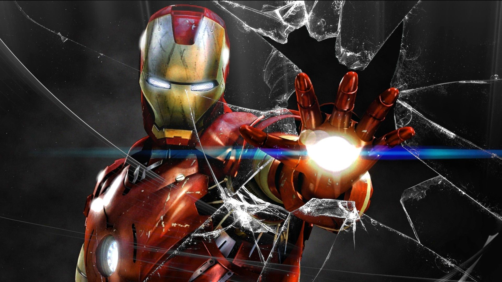

آيرون مان
آيرون مان أو الرجل الحديدي هو فيلم من إنتاج عام 2008، يستند إلى إحدى قصص مارفل كومكس الكرتونية المصورة التي تحمل نفس الاسم. الفيلم هو الأول ضمن عالم مارفل السينمائي من إخراج جون فافرو مع سيناريو من كتابة مارك فيرغس وهوك أوستبي وآرثر ماركون وماثيو هولاوي. الفيلم من بطولة روبرت داوني جونير بدور توني ستارك/ ايرون مان وجوينيث بالترو وتيرينس هاوارد وجيف بريدجز.
الطاقم
- المخرج : جون فافرو
- السيناريو : مارك فيرغس
هوك أوستبي
آرثر ماركون
ماثيو هولاوي
- البطولة : روبرت دوني جونير
تيرينس هاوارد
جوينيث بالترو
تصفح عن فلم آيرون مان